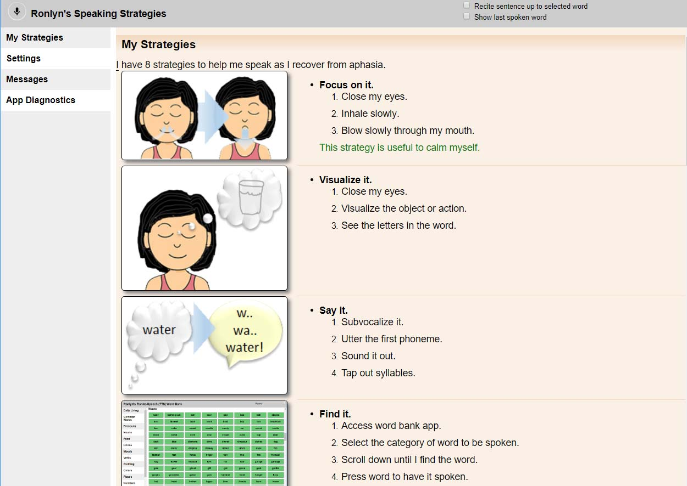
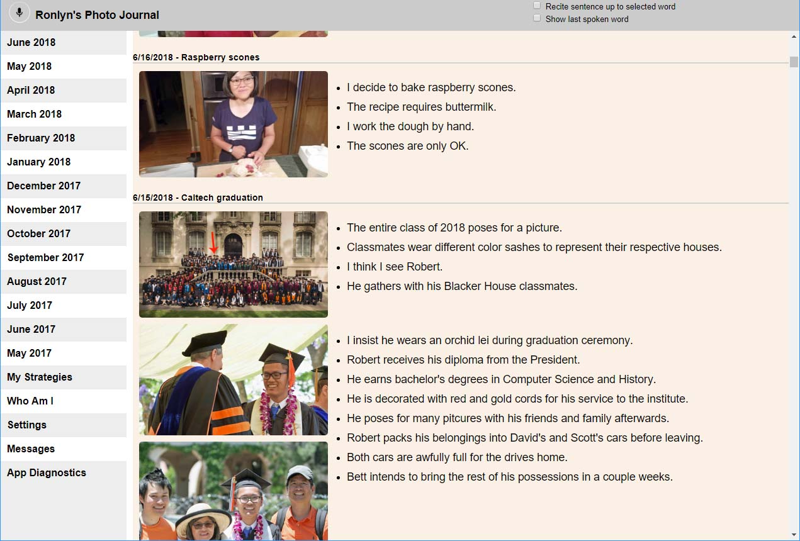
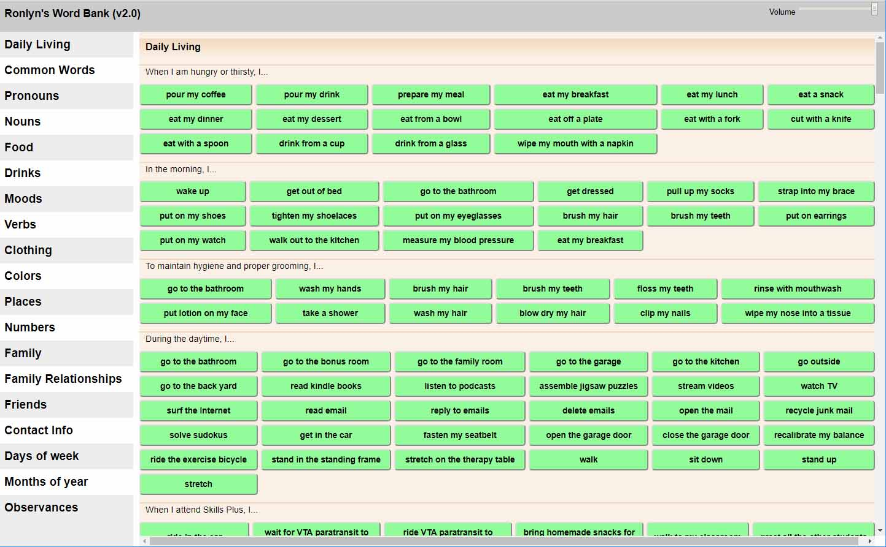
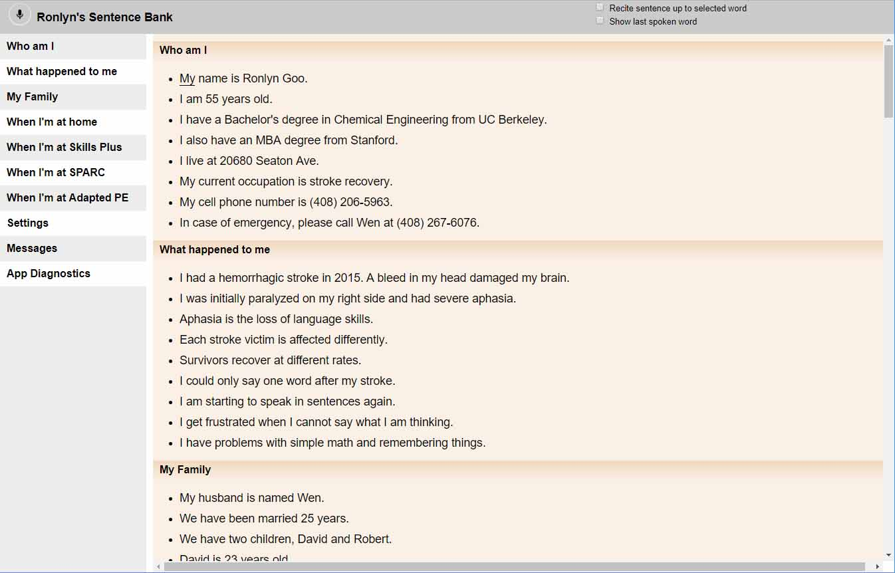
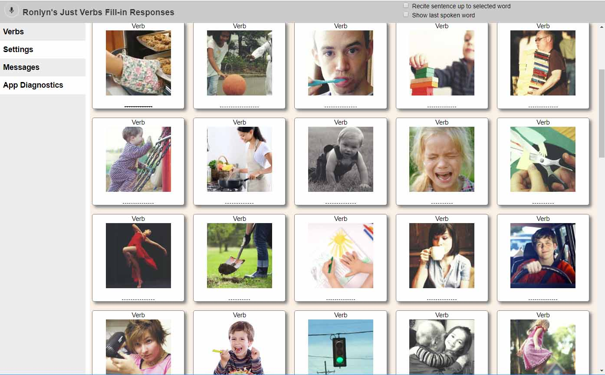
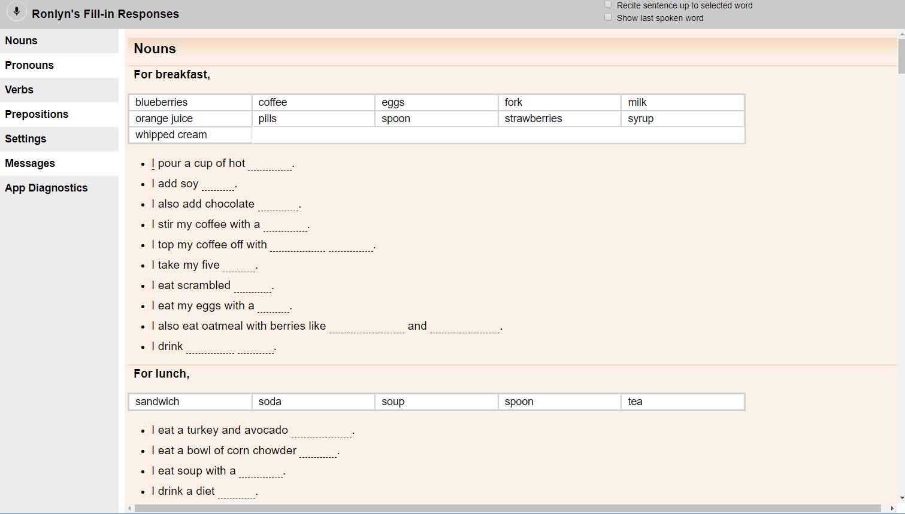
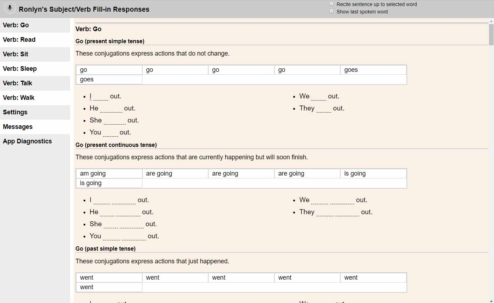
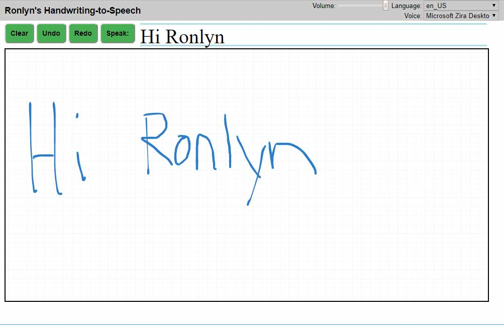
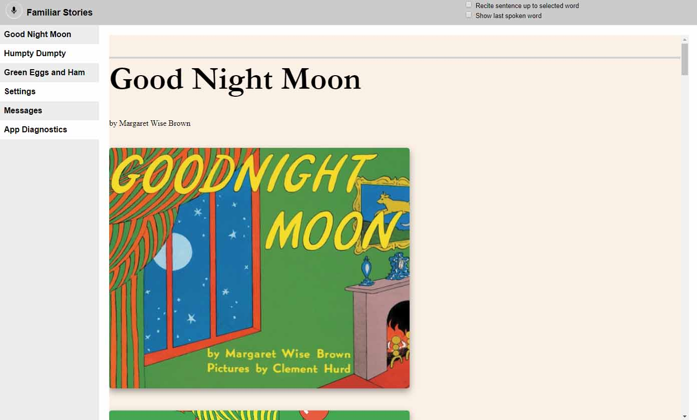

Shortcuts
My Strategies
My Journal
Word Bank
Sentence Banks
Verb Flashcards
Common Fill-ins
Subject/Verb conjugation
Handwriting to Speech
Familiar Stories
My Strategies

(click on image)
Description:
These strategies help me to recover from aphasia caused by my severe hemorrhagic stroke in 2015. The speech recognition feature allows me to practice by myself.Rationale:
I require these strategies to help my brain overcome aphasia. These strategies were developed in concert with my Speech and Language Pathologists.- I have my favorite strategies when I am at a loss for words.
-
But each strategy can help me.
-
I need to apply the proper strategy depending upon the circumstance.
-
The speech recognition capability allows me to read aloud and maintain perfect execution without a human aide monitoring me.
Regimen:
I am trying to apply these strategies every day.
Goal:
I want to use these strategies in my every day life until I overcome aphasia.
My Journal

(click on image)
Description:
This photo journal reflects my life as I recover from aphasia caused by my severe hemorrhagic stroke in 2015. The speech recognition feature allows me to practice by myself.Rationale:
Oral reading helps with the recovery of fluency after aphasia according to professionals and lay survivors alike. The more familiar the content is to the me, the more effective my therapy and recovery.-
Each entry reflects upon my personal experiences regardless of how trivial or monumental.
- The entry includes one or more photos or images to provide visual cue as to the content. The journal can also be formatted to display just the photos.
-
An entire sentence or just a word can be recited back to me.
-
The speech recognition capability allows me to read aloud and maintain perfect execution without a human aide monitoring me.
Regimen:
I am trying to read several entries each day.
Goal:
I want to describe the photo entries in my journal fluently without reading the captions.
Word Bank

(click on image)
Description:
This word bank synthesizes words and phrases I commonly use. The app is primarily designed to assist me with my speech like an AAC. Words and phrases are spoken at the push of a button. However, I can also use it to practice speaking. The words and phrases are organized by category and context.-
Categories include food, drinks, moods, colors.
- Contexts include "in the morning...", "during the daytime...".
Rationale:
The words and phrases organized by category or context allow me to find and generate words otherwise "at the tip of my tongue".
Regimen:
I will use it whenever I need an AAC or just want to practice.
Goal:
I want to rely on this app less over time as I regain fluency.
Sentence Banks

(click on image)
Description:
This sentence bank contains my personal information along with generic sentences. The read-along speech recognition feature allows me to practice by myself.Rationale:
Oral reading helps with the recovery of fluency after aphasia according to professionals and lay survivors alike. The more familiar the content is to the me, the more effective my therapy and recovery.-
Each entry can draw upon my personal experiences.
- I also find reciting short generic sentences to be effective retraining. I can practice sentences containing three, four and five words.
-
An entire sentence or just a word can be recited back to me.
-
The speech recogition capability allows me to read aloud and maintain perfect execution without a human companion monitoring me.
Regimen:
I am practicing the generic sentences each day.
Goal:
I want to describe my personal situation fluently without reading the sentences in the bank.
I want to use the generic sentences fluently.
Nouns Flashcards
TBDVerb Flashcards

(click on image)
Description:
These verb flashcards allow me to practice retrieving action words based on images. The speech recognition feature allows me to practice by myself.Rationale:
Verbs are more difficult for me to retreive than nouns with my aphasia. The images allow me to practice verb retrieval without using my literacy skills. I can already recite words that I read including these verbs.Regimen:
I am practicing the entire set each day.
Goal:
I want to say all of the verbs without error.
Common Fill-ins

(click on image)
Description:
These common fill-in response exercises allow me to practice word retrieval within the context of a sentence. One or more words in a sentence is hidden. The correct responses for a given section are listed separately. The speech recognition feature allows me to practice by myself.Rationale:
This app leverages my literacy skills to practice word retrieval. The sentence provides me enough written context to practice word retrieval. Words to be retrieved are typically grouped by part of speech.-
subjective nouns, nouns as subjects.
-
objective nouns, nouns as objects.
-
verbs
-
prepositions
Regimen:
I am practicing at least one section a each day especially the ones with which I have problems.
Goal:
I want to say all of the fill-in words without error.
Subject Verb Fill-ins

(click on image)
Description:
This fill-in response exercise allows me to practice conjugating verbs with various subjects. Verbs can take different forms depending upon person, tense, mood besides its infinitive form. The speech recognition feature allows me to practice by myself.Rationale:
The English language allows verbs to be altered from its base form in many different ways. This exercise allows me conjugate verbs using aixliary and helping verbs.-
.
- . .
Regimen:
I am practicing several sections each day.
Goal:
I want to answer all the responses without error.
Handwriting to Speech

(click on image)
Description:
This tool lets me to write my thoughts out and have them spoken aloud. It represents the natural next step from "air" writing with my finger.Rationale:
I am sometimes able to write what I want to say easier than speaking it. Insome instances, I just need to start writing the word before I just say it.Regimen:
I use this whenever I get stuck saying a word.
Goal:
I want to describe my personal situation fluently.
Familiar Stories

(click on image)
Description:
Familiar stories provide reading practice.Rationale:
Oral reading helps with the recovery of fluency after aphasia. I have read the first story aloud more than all others combined over my lifetime! The illustrations will help me find the words!Regimen:
I read these every once in a while as a change of pace.
Goal:
I want to describe the illustrations fluently without the words.
Settings
The Reading Monitor will stop listening after the end of each sentence.
The Reading Monitor recitation volume can be adjusted.
The Reading Monitor voice can be changed.
The Reading Monitor diagnoistics can be verbose.
Messages
Progress
App Diagnostics
Error Messages
Not initialized
Diagnostic Messages
sentence idx:0,
word idx:0,
word id:0,
last spoken word:0
Not initialized